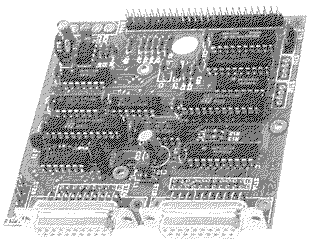

Previous
Next
TOC
SCSI Hostadapter der Fa. Maxon

Verwaltet bis zu 8 Geräte, generiert Parity, DMA in und out. Für den
Einsatz in Plattengehäusen. Die Terminierung ist fest eingelötet und
der Hostadapter liefert kein Termpower an den SCSI Bus. Verfügt nur
über einfache Bustreiber, daher sollte man das Kabel nicht allzulang
machen (die 6 Meter die der SCSI Standard vorgibt sollte man keines-
falls ausreizen).
Kapitel SCSI Hostadapter der Fa. Maxon, Seite 1